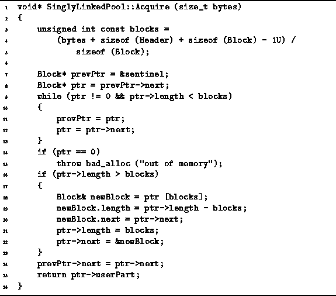

Data Structures and Algorithms
with Object-Oriented Design Patterns in C++
Data Structures and Algorithms
with Object-Oriented Design Patterns in C++
The Acquire function is used to reserve an area in the pool.
The code for the Acquire member function of the
SinglyLinkedPool class is given in Program  .
The Acquire function takes a single argument that specifies
the size of the memory area to be allocated (in bytes).
The function returns a pointer to the allocated area of the pool.
.
The Acquire function takes a single argument that specifies
the size of the memory area to be allocated (in bytes).
The function returns a pointer to the allocated area of the pool.

Program: SinglyLinkedPool Class Acquire Member Function Definition
The function begins by calculating the number of blocks required using the formula
I.e., enough storage is set aside to hold the requested number of bytes plus a Header (lines 3-5).
The Acquire function then traverses the linked list of free areas to find a free area that is large enough to satisfy the request (lines 7-13). This is the so-called first-fit allocation strategy : It always allocates storage in the first free area that is large enough to satisfy the request.
An alternative to the first-fit strategy is the best-fit allocation strategy . In the best fit strategy, the Acquire function allocates storage from the free area the size of which matches most closely the requested size. Under certain circumstances, the best-fit strategy may prevent excessive fragmentation of the storage pool. However, the best-fit strategy requires that the entire free list be traversed. Since we are interested in the fastest possible execution time, the first-fit strategy is used here.
If the search for a free area is unsuccessful, a badalloc exception is thrown (lines 14-15). Otherwise, the variable ptr points the free area in which the allocation takes place and the variable prevPtr points to its predecessor in the singly-linked list. If the free area is exactly the correct size, it is simply unlinked from the free list (line 24) and a pointer to the userPart of the area is returned (line 25).
On the other hand, if the free area is larger than needed, the area is split into two areas. The size of the first area is set to the number of blocks requested and the size of the second area is equal to the number of blocks that remain. The second area is then inserted into the free list (lines 16-23). Notice that the area which is unlinked from the free list (line 24) is always equal in size to the required number of blocks.
The running time of the Acquire function is determined by the number of iterations of the loop on lines 9-13. All of the remaining statements in the function require a constant amount of time in the worst-case. The number of iterations of the loop is determined by three factors: the length of the free list, the size of the area requested, and the position in the free list of an area that is large to satisfy the request.
If we make no assumptions about the distribution of the sizes requested and of the pattern of Acquire and Release operations, we cannot say very much about the running time. In the worst case, if there are n blocks in the storage pool, the running time of the Acquire function is O(n).
On the other hand, if we know a priori that all the requests are for the same amount of memory, then we can expect the running time of the Acquire function to be O(1) in the worst case. This is because every single block in the free list is guaranteed to be large enough to satisfy any request. And since we are using the first-fit strategy, the request is satisfied by allocating storage in the first area in the free list.
 Copyright © 1997 by Bruno R. Preiss, P.Eng. All rights reserved.
Copyright © 1997 by Bruno R. Preiss, P.Eng. All rights reserved.